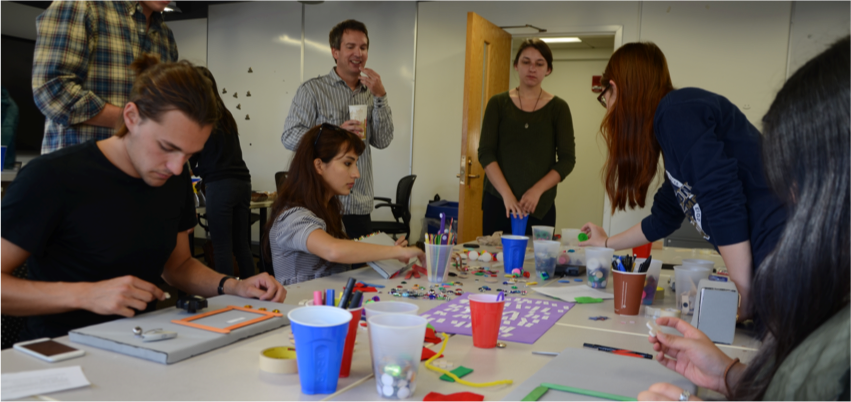
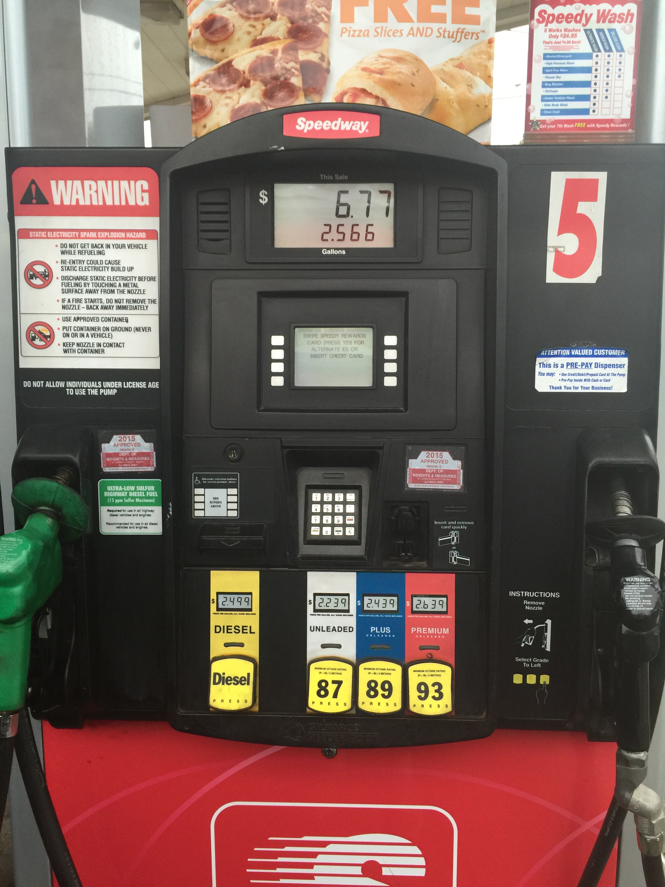

Issue:
Speedway’s Gas Pump, on Angela and Edison in South Bend, is a daunting public interface for first time users.
- Two screens to look at and keep track of
- Three areas to press buttons
- All text is presented in all caps
- The location and hierarchy of elements are skewed
- Gas prices, arguably the most important info, are not at eye level
- Fuel grades (87, 89, 93) are more prominent than any other piece of information even though nobody knows what they even mean!
Research:
After studying Speedway’s Gas Pump and its intended usage, I mapped out task flows for specific operations and documented users as they attempted to complete each task. A general lack of visual guidance on what to do first and a lack of grouping pointed to a need for clearer instructions and more pronounced divisions between groups of elements. These points were further emphasized during the participatory research performed —wherein participants constructed their idealized method of making purchases.

Participatory Research Generative Research

Current Design